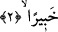
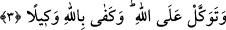

itâat etmeme durumuna devam et. Rasûlullah (s.a) onlara itâat ediyor değildi ki onlara
itâatten men edilsin. Fakat bu ifâde ile O’nun durumu pekiştirilmiş ve hâlini muhâfaza
konusunda takviye edilmiştir.
“__WORD__ (itâat)”, boyun eğmek demektir. İtâat ancak emirden sonra olur. Tâat ve ibâdet
arasında fark, ibâdetin aksine tâatin emirle yapılan bir iş olmasından başka bir şey
değildir.
“Elbette Allah” sürekli ve devamlı olarak kulların yararına ve zararına olan şeyleri
“bilmekte ve yerli yerince yapmaktadır.” Onun için sana ancak faydalı olan şeyleri
emreder ve sana ancak zararlı olanları yasaklar. Ancak sonsuz hikmetinin muktezâsınca
hükmeder.
2. Rabbinden sana vahyedilene uy. Şüphesiz Allah, bütün yaptıklarınızdan
haberdardır.
Takvâ, kâfir ve münâfıklara itâati terk ve diğer konularda “Rabbinden sana
vahyedilene” din konusunda yapacağın ve yapmayacağın her hususta “uy.” Yâni
kâfirlerin görüşüyle değil, Kur’an ile amel et.
Sehl der ki: “En doğru yolun bid‘at çıkarma ve indî davranma yolu değil, Kur’an’a
tâbi olma ve uyma yolu olduğunun bilinmesi için, Allah bu ifâdelerle Rasûlullah (s.a.)’i
düşmanlarına uymaktan alıkoydu ve O’na bütün hallerinde Kur’an’a uymasını emretti.”
Ben ankâ kuşunun mekânına kendiliğimden ulaşmadım,
Bu mesâfeyi Süleyman’ın kuşu ile kat ettim.
“Şüphesiz Allah,” emirlere uyma ve uymama konusunda “bütün yaptıklarınızdan
haberdardır.” Dolayısıyla uyma ve uymamanın her ikisinin de sevab ve cezâ olarak
karşılığını verecektir. Bu ifâde de hem teşvik hem de korkutma vardır. Hitap hem Hz.
Peygamber (s.a.)’e hem de mü’minleredir.
3. Allâh’a güven. Vekîl olarak Allah yeter.
“Allâh’a güven.” Yâni bütün işlerini O’na havâle et. “Vekîl” bütün işlerin kendisine